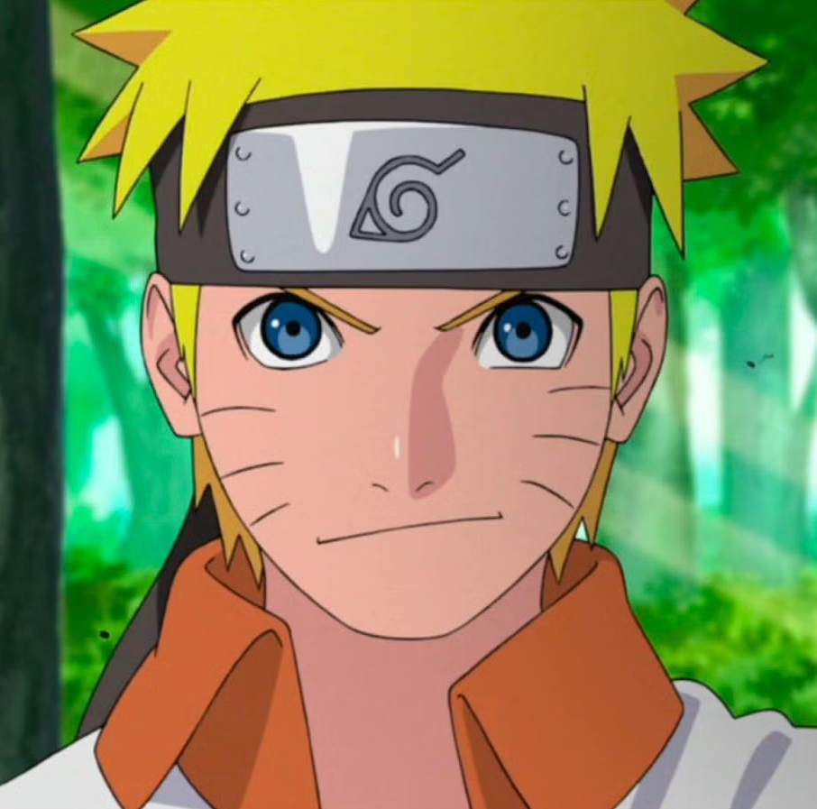
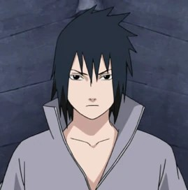
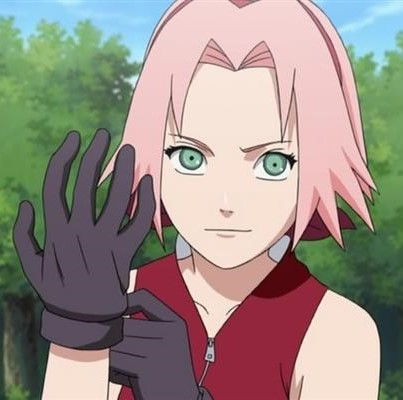
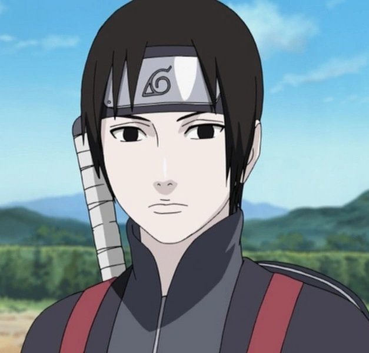
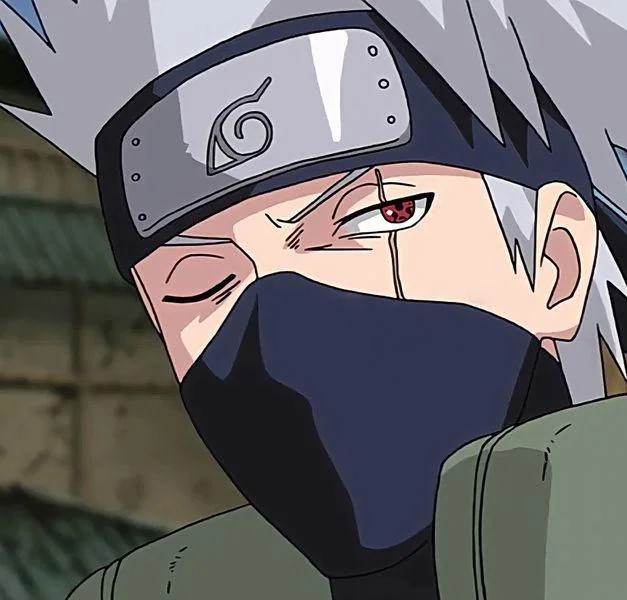
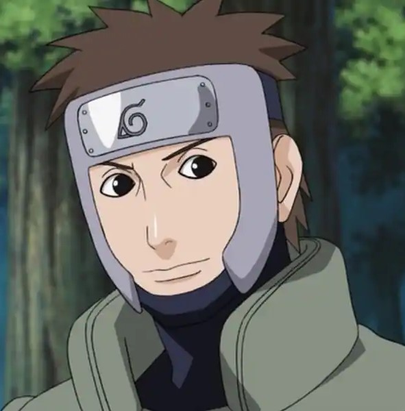

-
Naruto
Descrição
Naruto Uzumaki (うずまきナルト, Uzumaki Naruto) is a shinobi of Konohagakure's Uzumaki clan. He became the jinchūriki of the Nine-Tails on the day of his birth — a fate that caused him to be shunned by most of Konoha throughout his childhood. After joining Team Kakashi, Naruto worked hard to gain the village's acknowledgement all the while chasing his dream to become Hokage.
-
Sasuke
Descrição
Sasuke Uchiha (うちはサスケ, Uchiha Sasuke) is one of the last surviving members of Konohagakure's Uchiha clan. After his older brother, Itachi, slaughtered their clan, Sasuke made it his mission in life to avenge them by killing Itachi. He is added to Team 7 upon becoming a ninja, and, through competition with his rival and best friend, Naruto Uzumaki, Sasuke starts developing his skills but eventually grows dissatisfied with his progress.
-
Sakura
Descrição
Sakura Uchiha (うちはサクラ, Uchiha Sakura, née Haruno (春野)) is a kunoichi of Konohagakure. When assigned to Team 7, Sakura quickly finds herself ill-prepared for the duties of a shinobi. However, after training under the Sannin Tsunade, she overcomes this, and becomes recognised as one of the greatest medical-nin in the world.
-
Sai
Descrição
Sai Yamanaka (山中サイ, Yamanaka Sai) is the Anbu Chief of Konohagakure's Yamanaka clan. Prior to this, he was a Root member. As per standard Root training, Sai was conditioned to remove all emotions and as such, had difficulty connecting with others. When he is added to Team Kakashi as a replacement for the rogue Sasuke Uchiha, Sai begins to learn more about people's feelings and tries to develop his personality and identity by forming genuine bonds and rediscovering the emotions he was taught to suppress.
-
Kakashi
Descrição
Kakashi Hatake (はたけカカシ, Hatake Kakashi) is a shinobi of Konohagakure's Hatake clan. Famed as Kakashi of the Sharingan (写輪眼のカカシ, Sharingan no Kakashi) and the Copy Ninja (コピー忍者, Kopī Ninja), he is one of Konoha's most talented ninja, regularly looked to for advice and leadership despite his personal dislike of responsibility.
-
Yamato
Descrição
Yamato (ヤマト), also known as "Tenzō" (テンゾウ, Tenzō),[4] are both code names for this Anbu-turned-jōnin of Konohagakure. As his Wood Release would allow him to be able to keep the Nine-Tails sealed within Naruto Uzumaki in check, he was re-assigned from Anbu to the regular forces, joining Team Kakashi as a temporary replacement for their jōnin-sensei, Kakashi Hatake